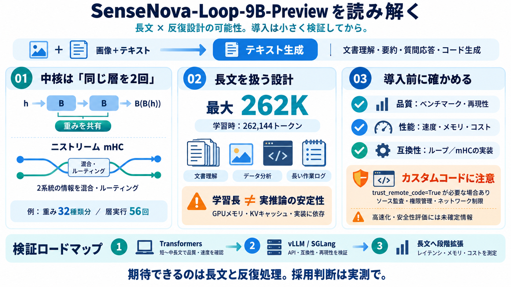

SenseNova-U1: Unifying Multimodal Understanding and Generation with NEO-unify Architecture (May 2026
[9:38] So for text tokens, the heightened width axis are essentially set to zero. Oh, wow. [9:42] And an image token car…

SenseNova-Loopを俯瞰
SenseNova-Loop-9B-Preview（画像＋テキスト）を、何ができるか／何が重要か／注意点まで一気に読み解きます。
画像＋テキスト → テキスト生成
文書理解、要約、質問応答、コード生成が想定領域。
長文 262K と反復設計
ループ型デコーダと二ストリームmHCが核です。
導入で迷う点
最大262Kの長文対応や“反復（ループ）”は魅力ですが、実運用では速度・メモリ・互換性・再現性の確認がボトルネックになりがちです。
ベンチマークの具体値が見えない箇所がある。
ループ実行はコスト増の可能性。
mHC/ループがサーバで同等に動くかは実装依存。
中核は“ループ”
SenseNova-Loop-9B-Previewは自己回帰（causal）デコーダ系で、デコーダ層の一部を共有重みで2回（ループ）適用する設計です。
同じ層分を“繰り返し”ながらも、増えるのはパラメータ種類の抑制を狙う。
B(B(h)) / ループ区間の説明あり
例として、前向き1回あたり“56回”の層実行回数になる一方、重みは“32種類”分のみという趣旨。
情報の流れを制御
ループ区間では、二つの残差ストリームを保持し、学習された写像で混合・ルーティングする二ストリームmHCが情報フローを調整します。
残差ストリームを2系統で扱う。
“どこに何を流すか”を学習で決める。
反復回数20 iterations が構成要素。
長文前提の学習
学習レシピには最大262,144トークンや、長さ最大256Kのマルチモーダル要素（テキスト・画像・コード・ツール軌跡）が含まれるとされています。
ドキュメント理解、データ分析、エージェント運用（長い作業ログ）。
画像枚数・入力整形、KVキャッシュ、コスト管理が重要。
反復は速度にも影響
ループ型デコーダは計算経路を深くする発想ですが、実行時の計算量・メモリにも影響し得ます。速度要件があるなら検証が必須です。
2回適用＝追加計算の発生可能性。
KVキャッシュ設計・長文で効いてくる。
MTPなどの有無で体感が変わる可能性。
サービングの入口
利用導線として、Transformersでの推論に加え、vLLM・SGLang・Docker等のサービング例が提示されています。開発・検証を素早く進めやすい構成です。
まずは手元検証（再現性確認）に向く。
OpenAI互換APIでcurl例がある（curlで叩く）。
導入の要点
Hugging Faceのカスタム実装を読み込むためにtrust_remote_code=Trueが必要になる可能性があります。利便性は高い一方、実行コードの監査・運用制限が重要です。
モデル側の“カスタムコード”読み込み。
コードが何をするかの完全保証がない。
ソース監査、ネットワーク制限、権限管理。
“長文”の扱い
学習時の最大シーケンス長として262,144が明記されても、推論で同等の長さがそのまま安定動作するとは限りません（サーバ実装とGPUメモリ次第）。
バッファ戦略・KVキャッシュ効率が支配しやすい。
短〜中長文で段階検証→長文へ拡張。
未確定情報
MTPなどの高速化の効き方や、Dspark/Dflash2の確定状況、主要ベンチマーク数値、安全性評価が“未確定/詳細不明”として残ります。
主要ベンチマークの具体値が見えにくい。
MTPや関連要素の実効が断定できない。
誤情報・プライバシー・運用制限が読み取れない。
結論（私見）
SenseNova-Loop-9B-Previewは、長文と反復的エージェント運用を意識したループ型デコーダ／二ストリームmHCが核です。価値は期待できる一方、互換性・速度・安全性の“詰め”が必要です。
技術要素が明示され、導入導線（Transformers/vLLM/SGLang）が多層。
再現性・コスト・評価不足。小さく検証してから拡張。
次の一手
まずは短〜中長文で品質と速度を確認し、サービング方式ごとにループ/mHCが想定通り動くか再現性を取ります。
Transformersで最小構成の応答品質を確認。
vLLM/SGLangでOpenAI互換APIの動作検証。
262K寄りまで段階拡張し、レイテンシ/コストを測る。
Apache-2.0が明記されていますが、安全性・運用制限の実データは別途確認が必要です。
[9:38] So for text tokens, the heightened width axis are essentially set to zero. Oh, wow. [9:42] And an image token car…
The capabilities of the SenseNova V6 model have been greatly enhanced, with strong advantages in long CoT, reasoning, ma…
跳至導覽 跳過主要內容 跳至右欄 [...] AASTOCKS # 商湯(00020.HK)開源SenseNova-MARS AASTOCKS 商湯(00020.HK)公布，今日(30日)正式開源多模態自主推理模型SenseNov…
"Given the same knowledge input, it provides better comprehension, summarization, and question and answers, providing st…
This is a preview page. For more details on listing tiers, refer to Listings Review Criteria Section B - (3). Do you …